GANGRENE (GAS GANGRENE)
This is a very dangerous infection of a wound, in which a foul-smelling gray or brown liquid forms. The skin near the wound may have dark blisters and the flesh may have air bubbles in it. The infection begins between 6 hours and 3 days after the injury. It quickly gets worse and spreads fast. Without treatment it causes death in a few days.
Treatment:
♦ Open up the wound as wide as possible. Wash it out with cool, boiled water and soap. Clean out the dead and damaged flesh. If possible, flood the wound with hydrogen peroxide every 2 hours.
♦ Inject penicillin (crystalline if possible), 1,000,000 (a million) units every
3 hours.
♦ Leave the wound uncovered so that air gets to it. Get medical help.
ULCERS OF THE SKIN CAUSED BY POOR CIRCULATION
Skin ulcers, or large, open sores, have many causes (see p. 20). However, chronic ulcers on the ankles of older persons, especially in women with varicose veins, usually come from poor circulation.
The blood is not moved fast enough through the legs. Such ulcers may become very large. The skin around the ulcer is dark blue, shiny, and very thin. Often the foot is swollen.
Treatment:
♦ These ulcers heal very slowly—and only if great care is taken. Most important: Keep the foot up high as often as possible. Sleep with it on pillows.
During the day, rest with the foot up high every
15 or 20 minutes. Walking helps the circulation, but standing in one place and sitting with the feet down are harmful.
♦ Put warm compresses of weak salt water on the ulcer—1 teaspoon salt to a liter of boiled water. Cover the ulcer loosely with sterile gauze or a clean cloth.
Keep it clean.
♦ Support the varicose veins with elastic stockings or bandages. Continue to use these and to keep the feet up after the ulcer heals. Take great care not to scratch or injure the delicate scar.
♦ Treating the ulcers with honey or sugar may help
(see p. 214).
Prevent skin ulcers—care for varicose veins early (see p. 175).

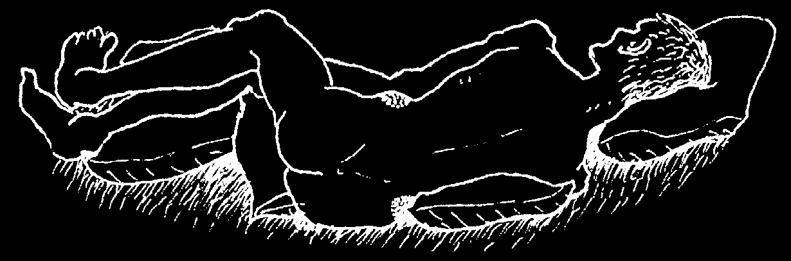
BED SORES (PRESSURE SORES)
These chronic open sores appear in persons so ill they cannot roll over in bed, especially in sick old persons who are very thin and weak. The sores form over bony parts of the body where the skin is pressed against the bedding. They are most often seen on the buttocks, back, shoulders, elbows, or feet.
For a more complete discussion of pressure sores, see Disabled Village Children,
Chapter 24, or A Health Handbook for Women with Disabilities, pages 114 to 117.
How to prevent bed sores:
♦ Turn the sick person over every hour: face up, face down, side to side.
♦ Bathe him every day and rub his skin with baby oil.
♦ Use soft bed sheets and padding. Change them daily and each time the bedding gets dirty with urine, stools, vomit, etc.
♦ Put cushions under the person in such a way that the bony parts rub less.
♦ Feed the sick person as well as possible. If he does not eat well, extra vitamins and iron may help (see p. 118).
♦ A child who has a severe chronic illness should be held often on his mother’s lap.
Treatment:
♦ Do all the things mentioned above.
♦ 3 times a day, wash the sores with cool, boiled water mixed with mild soap.
Gently remove any dead flesh. Rinse well with cool, boiled water.
♦ To fight infection and speed healing, fill the sore with honey, sugar, or molasses.
(A paste made of honey and sugar is easiest to use.) It is important to clean and refill the sore at least 2 times a day. If the honey or sugar becomes too thin with liquid from the sore, it will feed germs rather than kill them.
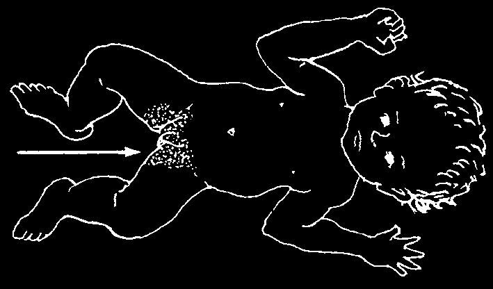


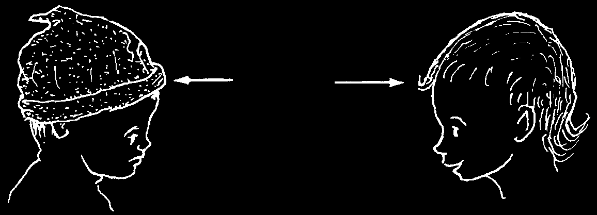
SKIN PROBLEMS OF BABIES
Diaper Rash
Reddish patches of irritation between a baby’s legs or buttocks may be caused by urine in his diapers (nappy) or bedding.
NO
YES
BARE IS BEST
Treatment:
♦ Bathe the child daily with lukewarm water and mild soap. Dry her carefully.
♦ To prevent or cure the rash, the child should be kept naked, without diapers, and he should be taken out into the sun.
♦ If diapers are used, change them often. After washing the diapers, rinse them in water with a little vinegar.
♦ It is best not to use talc (talcum powder), but if you do, wait until the rash is gone.
Dandruff (Cradle Cap, Seborrhea)
Dandruff is an oily, yellow to white crust that usually forms in patches on the scalp, but also on the cheeks, forehead, eyebrows, nose and ears. The skin is often red and irritated.
In babies, dandruff usually results from not washing the baby’s head often enough, or from keeping the head covered. It is also a common problem for people with HIV.
Treatment:
♦ Wash the head daily. A medicated soap can help, but usually regular soap and water are enough (see p. 370).
♦ Gently clean off all the dandruff and crust. To loosen the scales and crust, first wrap the head with towels soaked in lukewarm water.
NO
YES
DO NOT COVER A
BABY’S HEAD WITH
A CAP OR CLOTH.
KEEP THE HEAD
BARE IS BEST
UNCOVERED.
♦ Keep the head uncovered, open to the air and sunlight.
♦ If there are signs of infection, treat as for impetigo (see p. 202).
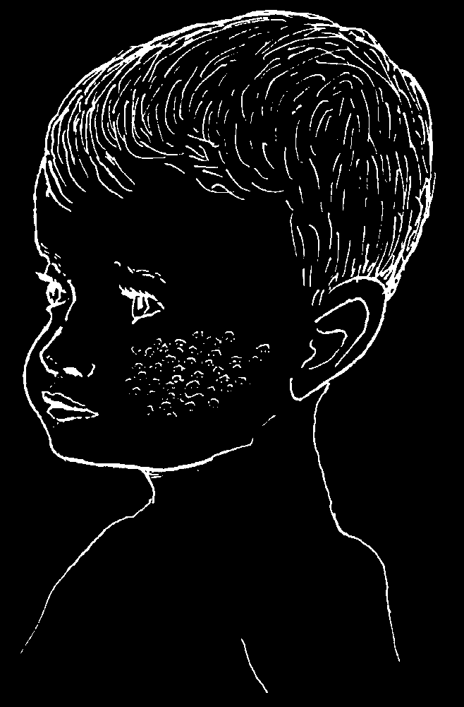

ECZEMA (RED PATCHES WITH LITTLE BLISTERS)
Signs:
• In small children: a red patch or rash forms
on the cheeks or sometimes on the arms and hands. The rash consists of small sores or blisters that ooze or weep (burst and leak fluid).
• In older children and grown ups: eczema is
usually drier and is most common behind the knees and on the inside of the elbows.
• It does not start as an infection but is more like
an allergic reaction.
Treatment:
♦ Put cold compresses on the rash.
♦ If signs of infection develop (p. 88), treat as for impetigo (p. 202).
♦ Let the sunlight fall on the patches.
♦ In difficult cases, use a cortisone or cortico-steroid cream (see p. 370). Or coal tar may help. Seek medical advice.
PSORIASIS
Signs:
• Thick, rough patches
of reddish or blue-gray skin covered with whitish or silver-colored scales.
The patches appear most commonly in the parts shown in the drawings.
• The condition usually lasts a
long time or keeps coming back. It is not an infection and is not dangerous.
Treatment:
♦ Leaving the affected skin open to the sunlight often helps.
♦ Bathing in the ocean sometimes helps.
♦ Seek medical advice. Treatment must be continued for a long time.
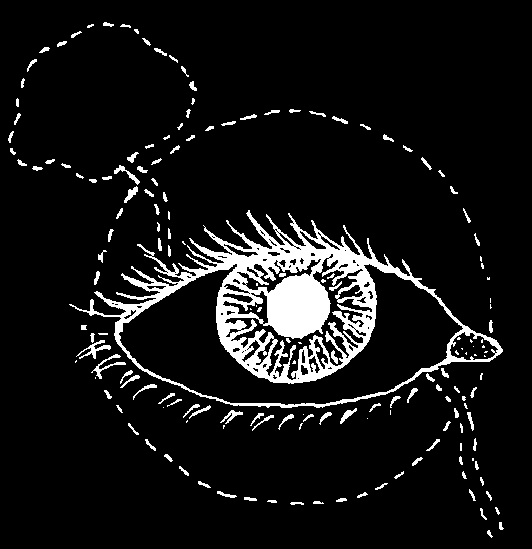


CHAPTER
The Eyes tear gland
The conjunctiva is the thin layer that covers the white of pupil the eye.
iris tear tube
The cornea is the from eye clear or transparent to nose layer that covers the iris and the pupil.
DANGER SIGNS
The eyes are delicate and need good care. Get medical help fast when any of the following danger signs occurs:
1. Any injury that cuts or ruptures (goes through) the eyeball.
2. Painful, grayish spot on the cornea, with redness around the cornea
(corneal ulcer).
3. Great pain inside the eye (possibly iritis or glaucoma).
4. A big difference in the size of the pupils when there is pain in the eye or the head.
A big difference in the size of the pupils may come from brain damage, stroke, injury to the eye, glaucoma, or iritis. (A small difference is normal in some people.)
5. Blood behind the cornea inside the eyeball
(see p. 225)
6. If vision begins to fail in one or both eyes.
7. A white glow or reflection in the pupil. This could be a sign of cancer
(retinoblastoma) or a cataract (see p. 225).
8. Any eye infection or inflammation that does not get better after 5 or 6 days of treatment with an antibiotic eye ointment.
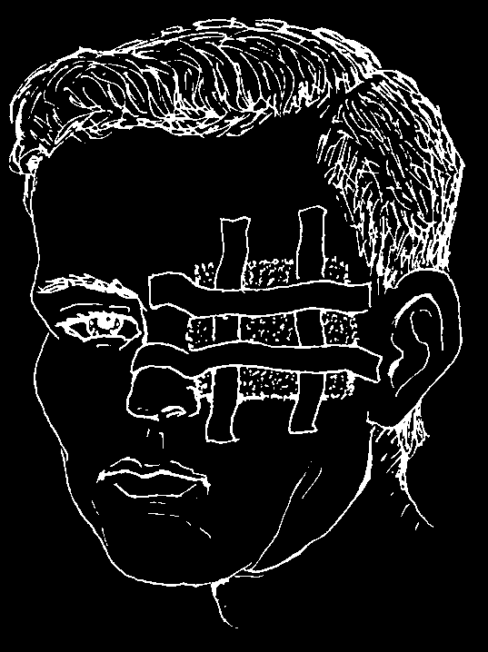
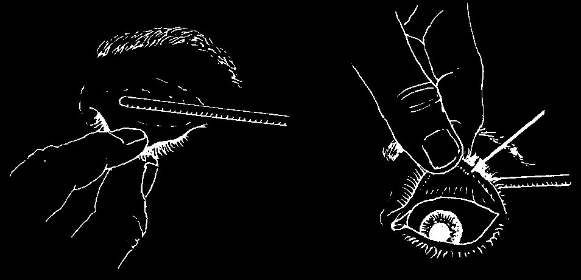
INJURIES TO THE EYE
All injuries to the eyeball must be considered dangerous, for they may cause blindness.
Even small cuts on the cornea (the transparent layer covering the pupil and iris) may get infected and harm the vision if not cared for correctly.
If a wound to the eyeball is so deep that it reaches the black layer beneath the outer white layer, this is especially dangerous.
If a blunt injury (as with a fist) causes the eyeball to fill with blood, the eye is in danger (see p. 225). Danger is especially great if pain suddenly gets much worse after a few days, for this is probably acute glaucoma (p. 222).
Treatment:
♦ If the person still sees well with the injured eye, put an antibiotic eye ointment (p. 378) in the eye and cover it with a soft, thick bandage. If the eye is not better in a day or two, get medical help.
♦ If the person cannot see well with the injured eye, if the wound is deep, or if there is blood inside the eye behind the cornea (p. 225), cover the eye with a clean bandage and go for medical help at once. Do not press on the eye.
♦ Do not try to remove thorns or splinters that are tightly stuck in the eyeball. Get medical help.
HOW TO REMOVE A SPECK OF DIRT FROM THE EYE
Have the person close her eyes and look to the left, the right, up and down. Then, while you hold her eye open, have her look up and then down. This will make the eye produce more tears and the dirt often comes out by itself.
Or you can try to remove the bit of dirt or sand by flooding the eye with clean water
(p. 219) or by using the corner of a clean cloth or some moist cotton. If the particle of dirt is under the upper lid, look for it by turning the lid up over a thin stick. The person should look down while you do this:
The particle is often found in the small groove near the edge of the lid. Remove it with the corner of a clean cloth.
If you cannot get the particle out easily, use an antibiotic eye ointment, cover the eye with a bandage, and go for medical help.


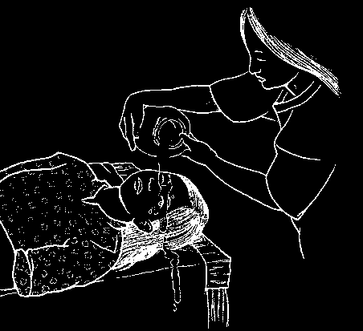
CHEMICAL BURNS OF THE EYE
Battery acid, lye, gasoline, or a pesticide that gets into the eye can be dangerous. Hold open the eye. Immediately flood the eye with clean, cool water. Keep flooding for
30 minutes, or until it stops hurting. Do not let the water get into the other eye.
RED, PAINFUL EYES—DIFFERENT CAUSES
Many different problems cause red, painful eyes. Correct treatment often depends on finding the cause, so be sure to check carefully for signs of each possibility. This chart may help you find the cause:
foreign matter (bit of dirt, etc.)
usually affects one eye only;
in the eye (p. 218)
redness and pain variable burns or harmful liquids one or both eyes;
(p. 219)
redness and pain variable
'pink eye’ (conjunctivitis, p. 219)
usually both eyes (may start hay fever (allergic conjunctivitis, or be worse in one)
p. 165)
usually reddest trachoma (p. 220)
at outer edge measles (p. 311)
'burning’ pain, usually mild acute glaucoma (p. 222)
usually one eye only;
iritis (p. 221)
reddest next to scratch or ulcer on the cornea the cornea
(p. 224)
pain often great
'PINK EYE’ (CONJUNCTIVITIS)
This infection causes redness, pus, and mild 'burning’ in one or both eyes.
Lids often stick together after sleep. It is especially common in children.
Treatment:
First clean pus from the eyes with a
EYE clean cloth moistened with boiled water.
OINTMENT
Then put in antibiotic eye ointment
(p. 378). Pull down the lower lid and put a little bit of ointment inside, like this:
Putting ointment outside the eye does
CAUTION: Do
no good.
not touch the tube against the eye.
Prevention:
Most conjunctivitis is very contagious. The infection is easily spread from one person to another. Do not let a child with pink eye play or sleep with others, or use the same towel. Wash hands after touching eyes.


TRACHOMA
Trachoma is a chronic infection that slowly gets worse. It may last for months or many years. If not treated early, it sometimes causes blindness. It is spread by touch or by flies, and is most common where people live in poor, crowded conditions.
Signs:
• Trachoma begins with red, watery eyes, like ordinary conjunctivitis.
• After a month or more, small, pinkish gray lumps, called follicles, form inside the upper eyelids. To see these, turn back the lid as shown on p. 218.
• The white of the eye is a little red.
• After a few months, if you look very carefully, or with a magnifying glass, you may see that the top edge of the cornea looks grayish, because it has many tiny new blood vessels in it (pannus).
• The combination of both follicles and pannus is almost certainly trachoma.
• After several years, the follicles begin to disappear, leaving whitish scars.
These scars make the eyelids thick
Or the scarring may pull the eyelashes and may keep them from opening down into the eye, scratching the or closing all the way.
cornea and causing blindness.
Treatment of trachoma:
Put 1% tetracycline or erythromycin eye ointment (p. 378) inside the eye 3 times each day, or 3% tetracycline or erythromycin eye ointment 1 time each day. Do this for
30 days. For a complete cure, also take tetracycline (p. 355), erythromycin (p. 354) or a sulfonamide (p. 356) by mouth for 2 to 3 weeks.
Prevention:
Early and complete treatment of trachoma helps prevent its spread to others. All persons living with someone who has trachoma, especially children, should have their eyes examined often and if signs appear, they should be treated early. Washing the face every day can help prevent trachoma. Also, it is very important to follow the
Guidelines of Cleanliness, explained in Chapter 12.
Cleanliness helps prevent trachoma.
INFECTED EYES IN NEWBORN BABIES (NEONATAL CONJUNCTIVITIS)
If a mother has chlamydia or gonorrhea (see p. 236), she may pass these infections to her baby at birth. The infection gets into the baby’s eyes and can cause blindness and other health problems. If the baby’s eyes get red, swell, and have a lot of pus in them within the first month, she may have one or both of these infections. It is important to provide treatment immediately.
Treatment for gonorrhea:
♦ Inject 125 mg. ceftriaxone in the thigh muscle, 1 time only (see p. 359).
Treatment for chlamydia:
♦ Give 30 mg. erythromycin syrup by mouth, 4 times a day for 14 days
(see p. 359).
If you cannot test to find out which disease is causing the infection, give medicines for both. The baby’s eyes should also be cleaned and treated with the medicines listed below.
Prevention:
Many women have chlamydia or gonorrhea and do not know they are infected.
Unless the mother has a test to show that she does not have these infections, give every baby medicine (see p. 378) in the eyes to prevent blindness:
• put a line of erythromycin 0.5% to 1% ointment in each of the baby’s eyes within the first 2 hours after birth. or
• put a line of tetracycline 1% eye ointment in each of the baby’s eyes within the first 2 hours after birth. or
• if you do not have erythromycin or tetracycline, put 1 drop of 2.5% solution of povidone-iodine in each of the baby’s eyes within the first 2 hours after birth.
Some people use a 1% solution of silver nitrate (or other silver eye medicines) in the baby’s eyes. These medicines stop blindness from gonorrhea, but they do not stop blindness from chlamydia. Silver nitrate also irritates the baby’s eyes for several days. If you can get erythromycin or tetracycline eye medicine, or povidone-iodine, use one of them. But use silver nitrate if that is all you have.
If a baby develops gonorrhea or chlamydia of the eyes, both parents should be treated for these infections (p. 237 and 359).
IRITIS (INFLAMMATION OF THE IRIS)
Signs:
NORMAL EYE
EYE WITH IRITIS
pupil small often irregular redness around iris severe pain
Iritis usually happens in one eye only. Pain may begin suddenly or gradually. The eye waters a lot. It hurts more in bright light. The eyeball hurts when you touch it.
There is no pus as with conjunctivitis. Vision is usually blurred.
This is an emergency. Antibiotic ointments do not help. Get medical help.
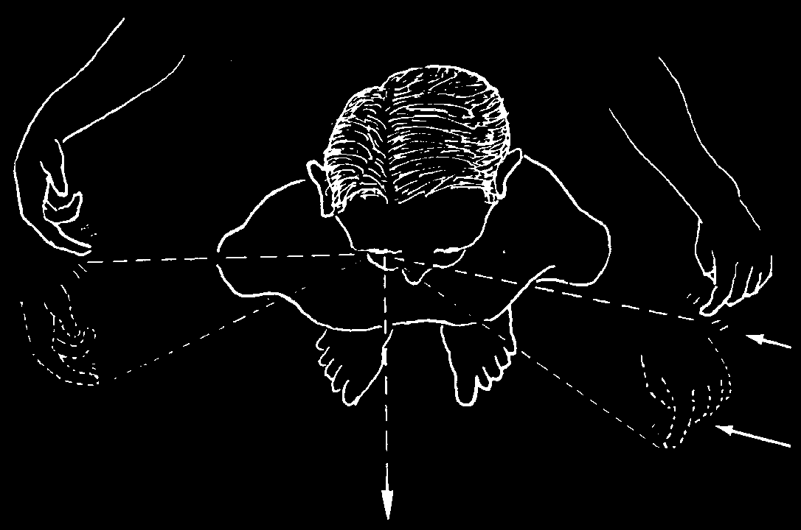
GLAUCOMA
This dangerous disease is the result of too much pressure in the eye. It usually begins after the age of 40 and is a common cause of blindness. To prevent blindness, it is important to recognize the signs of glaucoma and get medical help fast.
There are 2 forms of glaucoma.
ACUTE GLAUCOMA
This starts suddenly with a headache or severe pain in the eye. The eye becomes red, the vision blurred. The eyeball feels hard to the touch, like a marble. There may be vomiting. The pupil of the bad eye is bigger than that of the good eye.
normal glaucoma
If not treated very soon, acute glaucoma will cause blindness within a few days.
Surgery is often needed. Get medical help fast.
CHRONIC GLAUCOMA
The pressure in the eye rises slowly. Usually there is no pain. Vision is lost slowly, starting from the side, and often the person does not notice the loss. Testing the side vision may help detect the disease.
TEST FOR GLAUCOMA
Have the person cover one eye, and with the other look at an object straight ahead of him. Note when he can first see moving fingers coming from behind on each side of the head.
Normally fingers are first seen here.
In glaucoma, finger movement is first seen more toward the front.
If discovered early, treatment with special eyedrops (pilocarpine) may prevent blindness. Dosage should be determined by a doctor or health worker who can measure the eye pressure periodically. Drops must be used for the rest of one’s life.
When possible, eye surgery is usually the surest form of treatment.
Prevention:
Persons who are over 40 years old or have family members who have had glaucoma should try to have their eye pressure checked once a year.

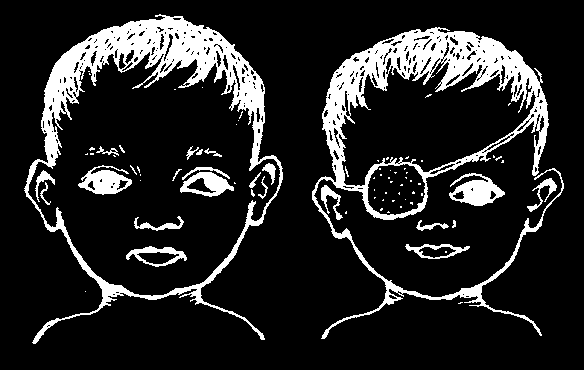
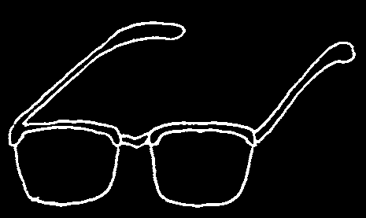
INFECTION OF THE TEAR SAC (DACRYOCYSTITIS)
Signs:
Redness, pain, and swelling beneath the eye, next to the nose.
The eye waters a lot. A drop of pus may appear in the corner of the eye when the swelling is gently pressed.
Treatment:
♦ Apply hot compresses.
♦ Put antibiotic eye drops or ointment in the eye.
♦ Take penicillin (p. 350).
TROUBLE SEEING CLEARLY
Children who have trouble seeing clearly or who get headaches or eye pain when they read may need glasses. Have their eyes examined.
In older persons, it is normal that, with passing years, it becomes more difficult to see close things clearly.
Reading glasses often help. Pick glasses that let you see clearly about 40 cm. (15 inches) away from your eyes.
If glasses do not help, see an eye doctor.
CROSS EYES AND A WANDERING OR 'LAZY’ EYE (STRABISMUS, 'SQUINT’)
If the eye sometimes wanders like this, but at other times looks ahead normally, usually you need not worry. The eye will grow straighter in time. But if the eye is always turned the wrong way, and if the child is not treated at a very early age, she may never see well with that eye. See an eye doctor as soon as possible to find out if patching of the good eye, surgery, or special glasses might help.
Surgery done at a later age can usually straighten the eye and improve the child’s appearance, but it will not help the weak eye see better.
IMPORTANT: The eyesight of every child should be checked as early as possible (best around 4 years). You can use an 'E’ chart (see
Helping Health Workers Learn, p. 24-13). Test each eye separately to discover any problem that affects only one eye. If sight is poor in one or both eyes, see an eye doctor.


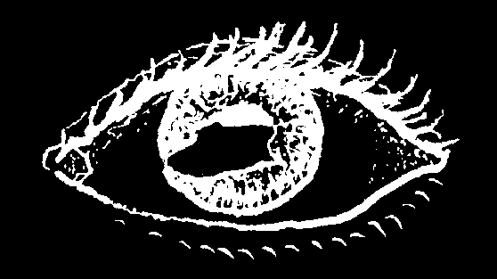
STY (HORDEOLUM)
A red, swollen lump on the eyelid, usually near its edge. To treat, apply warm, moist compresses with a little salt in the water. Use of an antibiotic eye ointment 3 times a day will help prevent more sties from occurring (see p. 378).
PTERYGIUM
A fleshy thickening on the eye surface that slowly grows out from the edge of the white part of the eye near the nose and onto the cornea;
caused in part by sunlight, wind, and dust. Dark glasses may help calm irritation and slow the growth of a pterygium. It should be removed by surgery before it reaches the pupil. Unfortunately, after surgery a pterygium often grows back again.
Folk treatments using powdered shells do more harm than good. To help calm itching and burning you can try using cold compresses. Or use eye drops of camomile (boiled, then strained, cooled, and without sugar).
A SCRAPE, ULCER, OR SCAR ON THE CORNEA
When the very thin, delicate surface of the cornea has been scraped, or damaged by infection, a painful corneal ulcer may result. If you look hard in a good light, you may see a grayish or less shiny patch on the surface of the cornea.
If not well cared for, a corneal ulcer can cause blindness. Apply antibiotic eye ointment, 4 times a day for 7 days (p. 378). If the eye is not better in 2 days, get medical help.
A corneal scar is a painless, white patch on the cornea. It may result from a healed corneal ulcer, burn, or other injury to the eye. If both eyes are blind but the person still sees light, surgery (corneal transplant)
to one eye may return its sight. But this is expensive.
If one eye is scarred, but sight is good in the other, avoid surgery. Take care to protect the good eye from injury.


BLEEDING IN THE WHITE OF THE EYE
A painless, blood-red patch in the white part of the eye occasionally appears after lifting something heavy, coughing hard (as with whooping cough), or being hit on the eye. The condition results from the bursting of a small vessel. It is harmless, like a bruise, and will slowly disappear without treatment in about 2 weeks.
Small red patches are common on the eyes of newborn babies. No treatment is needed.
BLEEDING BEHIND THE CORNEA (HYPHEMA)
Blood behind the cornea is a danger sign. It usually results from an injury to the eye with a blunt object, like a fist. If there is pain and loss of sight, refer the person to an eye specialist immediately.
If the pain is mild and there is not loss of sight, put a patch on both eyes and keep the person at rest in bed for several days. If after a few days the pain becomes much worse, there is probably hardening of the eye (glaucoma, p. 222). Take the person to an eye doctor at once.
PUS BEHIND THE CORNEA (HYPOPYON)
Pus behind the cornea is a sign of severe inflammation. It is sometimes seen with corneal ulcers and is a sign that the eye is in danger. Apply antibiotic eye ointment (p. 378) and get medical help at once. If the ulcer is treated correctly, the hypopyon will often clear up by itself.
CATARACT
The lens of the eye, behind the pupil, becomes cloudy, which you can see when you shine a light into it. Cataract is common in older persons, but also occurs, rarely, in babies. If a blind person with cataracts can still tell light from dark and notice movement, surgery may let him see again. During surgery, an artificial lens is put inside the eye to restore vision, without the need to wear glasses afterwards.
Medicines do not help cataracts.